前言
專案建得好，續寫維護沒煩惱——-好懶得寫環境安裝XD
因為公司最近的需求，我們要用 .NET Core來建構一個MVC架構的WEB API專案
而每一次使用一個新的程式語言或框架，我個人覺得最重要的就是建專案跟打底層架構了
俗話說：「專案建得好，續寫維護沒煩惱」(?哪來這句
好啦這句話是我自創的 哈哈哈 因為過去很多經驗是，當時我根本不會那門程式語言或者框架
但是有神人同事Carry，把基本的程式架構跟程式流程都建立好了
所以我要基於那個專案繼續維護或者開發新功能，就變得超級容易（感謝神Carry）
總之，今天就要來帶大家使用 .NET Core來建立一個WEB API專案，並且比較一下跟一般的MVC專案形式有什麼不同
Let’s Go！
開發環境設置與安裝
安裝Visual Studio
首先在開始做我們今天要做的事情之前，我們要先把我們的環境跟開發工具弄好
因為ASP.NET是微軟的Solution，因此我們只要下載微軟的一個超強大IDE “Visual Studio”
幾乎就能幫我們完成後續很多的開發事項以及細節
所以首先快到微軟的網站尋找 Visual Studio 2017 並且下載下來吧
（大家可以下載Community版本，我自己是使用公司電腦，裡面內帶Professional版本的Visual Studio 2017）
來到官方的下載頁面，選擇Community版本下載
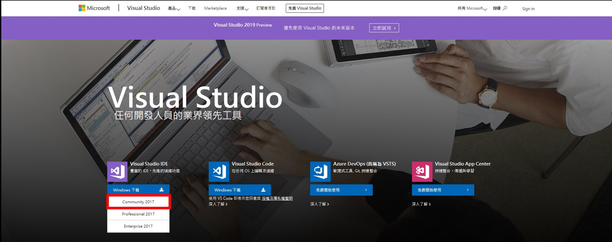接下來跑出下載畫面之後，就把Visual Studio的下載器下載下來吧！
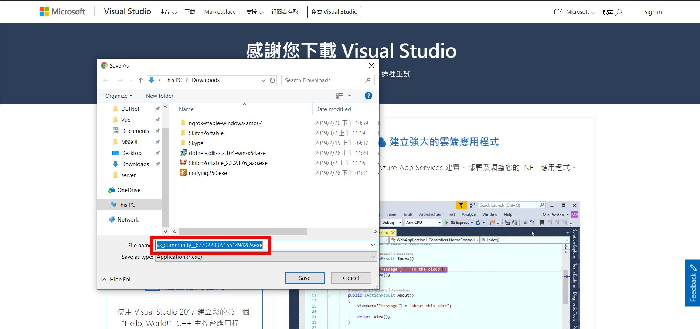執行Visual Studio安裝器之後，請勾選一些會用到的功能（如下圖）
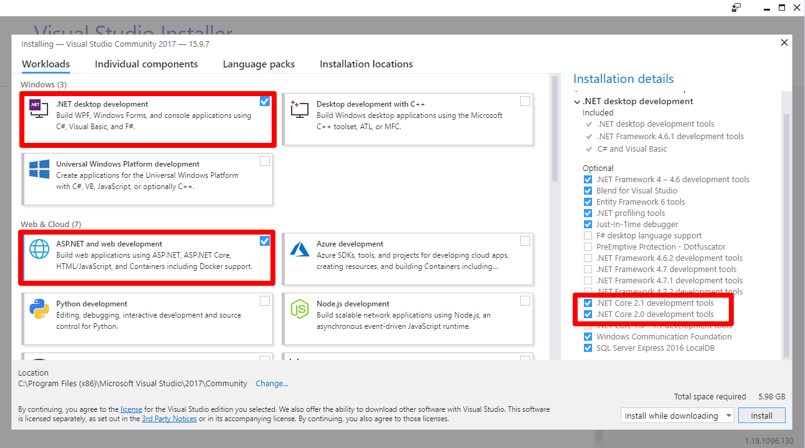還有下面這兩個也可以勾選一下一起安裝
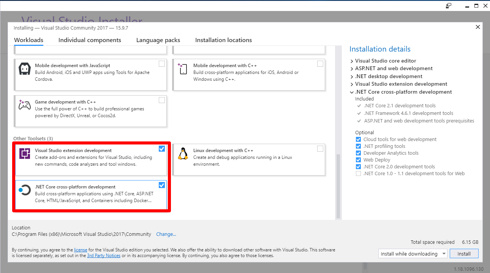假設安裝完成，就可以打開Visual Studio準備開始使用囉！（我這邊沒有重新安裝一次，所以只提供我自己的Visual Studio畫面給大家參考參考）
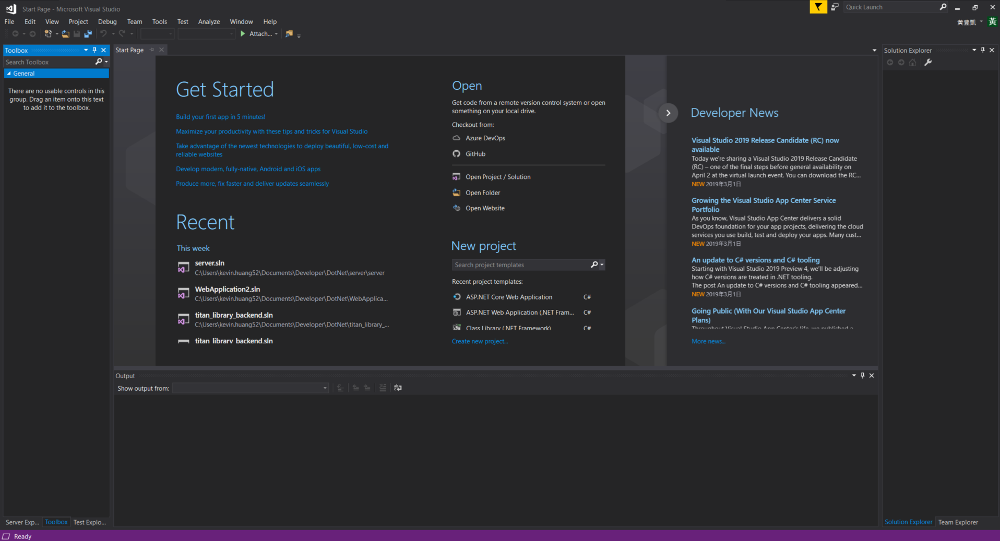
安裝最新版 .NET Core
因為不確定大家Visual Studio裡面內建的 .NET Core版本是不是最新的2.2版本，因此這邊也寫一下要安裝最新版的 .NET Core，以免未來會跟套件版本不相容。
請點選下圖紅框的那個下載並安裝哦，安裝過程就跟一般的驅動程式安裝沒兩樣，這邊就直接略過了。
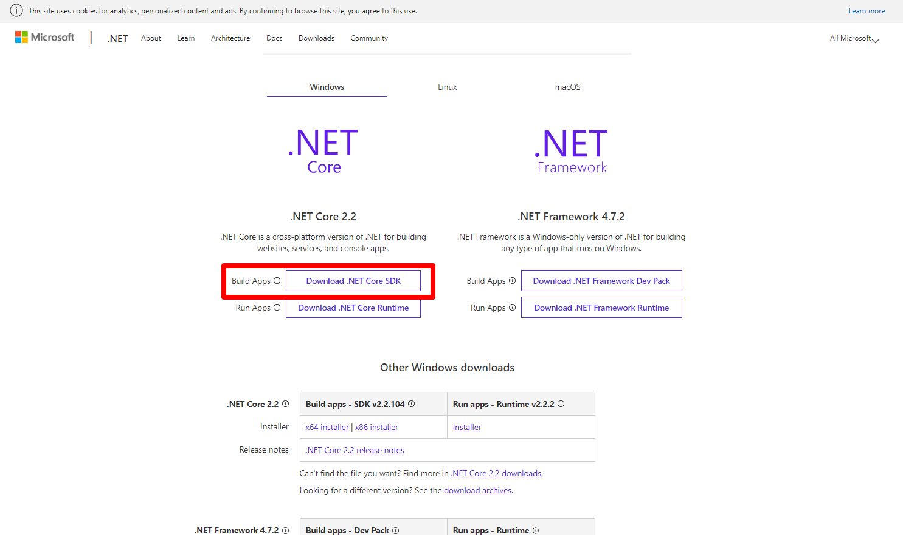
建立 .NET Core WEB API專案
建立專案
接下來要帶大家一起建立WEB API專案，我的Visual Studio介面是英文版的，如果有人是裝中文版的話，就自己對照相對位置囉！
首先打開Visual Studio軟體
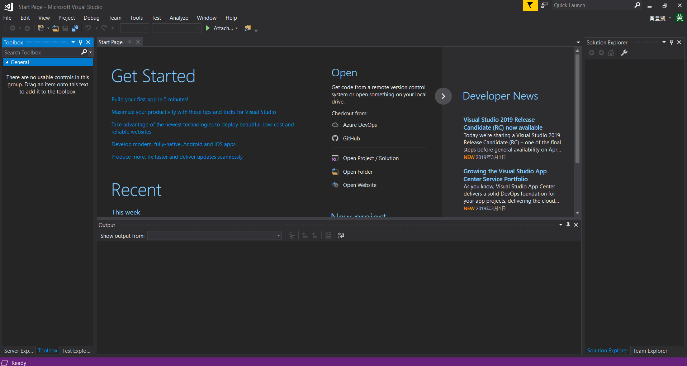接下來點選File->New->Project來建立一個新專案
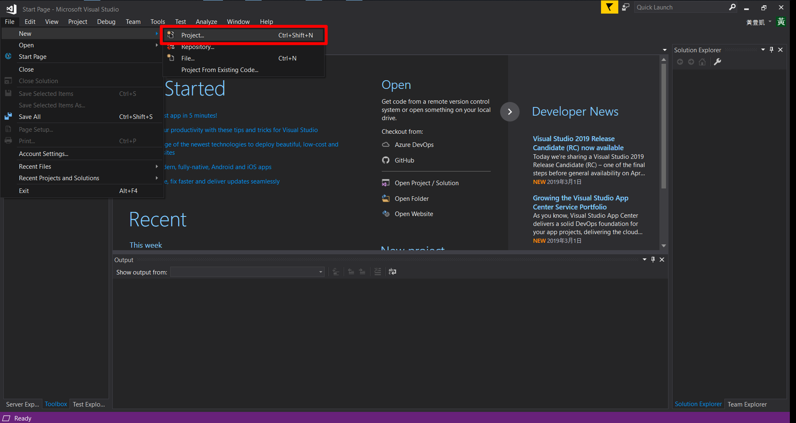選擇左邊C#中的Web->點選 ASP .NET Core Web Application->取一個適合的檔案名稱->點選OK建立專案
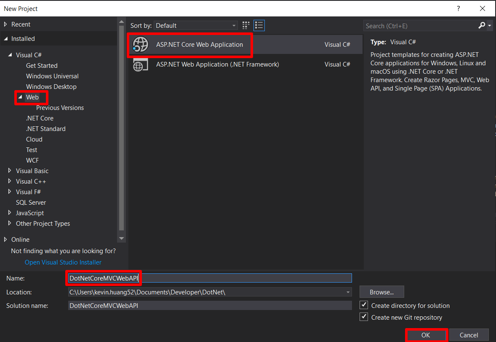接下來要選擇專案類型，我們要選擇的是API專案（如下圖），這個專案建立後只會有一個Controller資料夾，裡面有一個ValueController，內容會有範例WEB API程式碼，稍後會帶大家看一下。
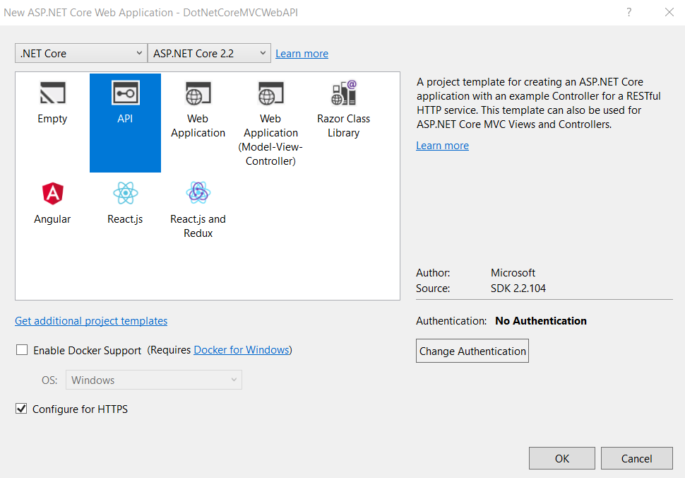專案建立完成後，就可以看到Visual Studio已經幫我們建立了預設的Controllers/ValueController.cs，並且裡面已經有寫了一些基本的GET and POST Function。
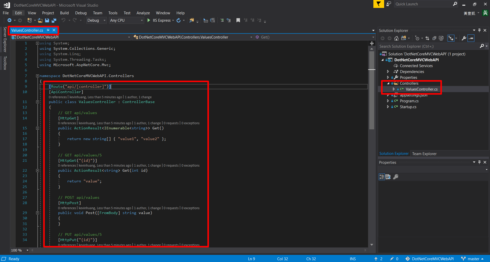
到這一步驟，WEB API專案就建立好囉！下一步我們就要開始安裝Entity FrameWork Core2套件，並且初始化我們的Models了！
那麼假設我們建立的是Web Application(Model-View-Controller)的專案呢（如下圖）?我在建立專案前，也有想嘗試建立這個專案類型，想說有MVC架構，之後再把它寫成WEB API的格式。
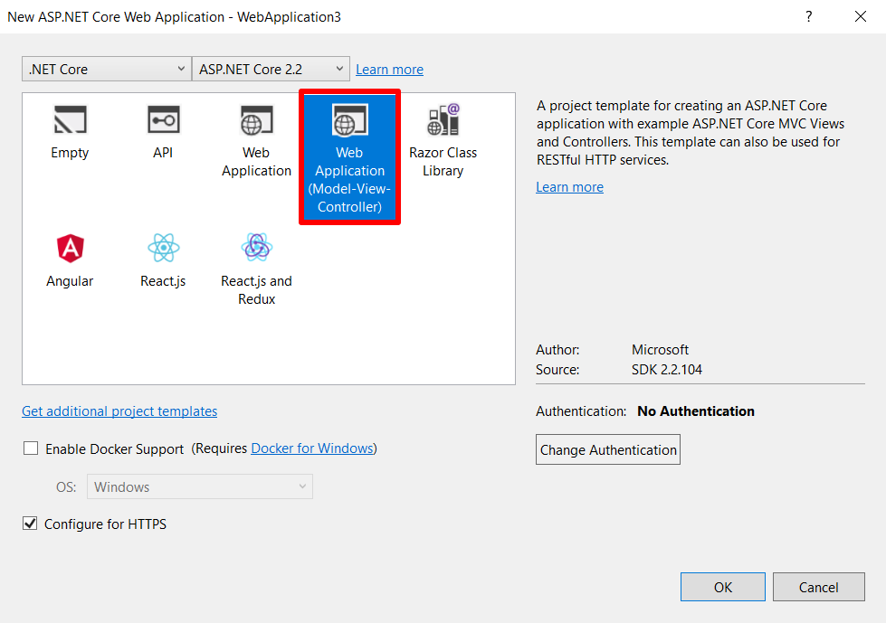
這種專案類型建立起來之後，就會有基礎的MVC架構，不過裡面的程式碼就不會有WEB API的基本Function囉！
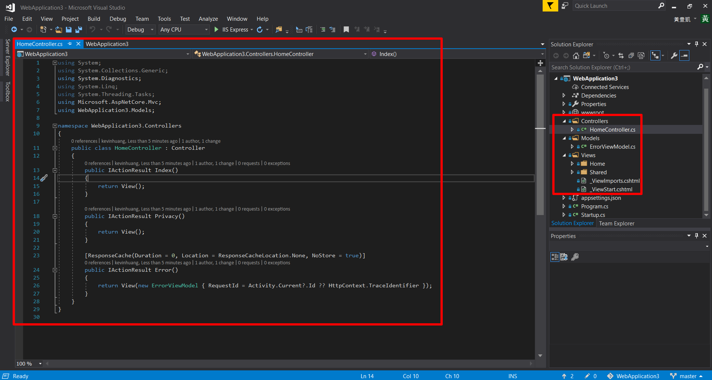
長得其實就跟我以前寫 .NET FrameWork MVC的時候的專案架構一樣，相較之下因為後續要做一些操作，我覺得還是建立WEB API專案會比較方便啦~
所以這篇文章就到這邊囉，下一篇會帶大家裝設Entity FrameWork Core2的套件，並且用他來初始化我們專案的Models與資料庫的對應，敬請期待吧！
另外附上本次專案的GitHub連結，大家如果想參考也可以把這個專案抓下來看哦（雖然這篇沒有做什麼事情啦，但之後還會有其他的進度，也可以當作範例來參考哦~！）